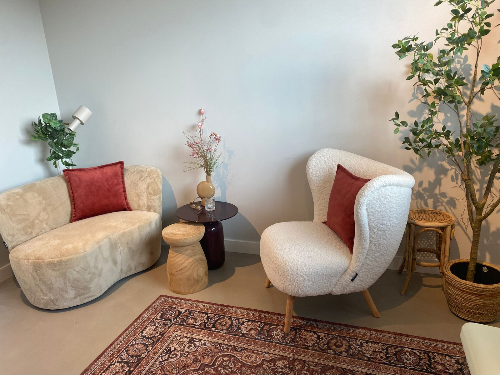
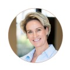

Essentia Holistic Care — Carine Beerens
Soms heeft je lichaam meer te vertellen dan je hoofd kan horen. Ik help je luisteren — via guasha, via coaching, of allebei. Vanuit het lichaam. Naar wie je werkelijk bent.
Beginnen bij het begin
Guasha is een oude behandeltechniek waarbij de huid met een speciale steen bewerkt wordt. Het is geen massage — het is een zachte, gerichte manier om het lichaam te helpen loslaten wat het vasthoudt.
Spanning. Vermoeidheid. Stijfheid. Maar ook iets wat moeilijker te benoemen is: die constante ondertoon van altijd aan moeten staan, erbij moeten blijven, net iets te weinig tot rust komen.
Na een guasha behandeling voelen mensen zich lichter. Alsof er iets van hun schouders is gevallen — en dat is niet alleen metaforisch. Het lichaam heeft daadwerkelijk spanning losgelaten. De adem gaat dieper. De stilte is minder ongemakkelijk. Je bent er gewoon even — in jezelf.
Dat is al waardevol op zichzelf. En het kan ook de start zijn van iets meer.
Spanning loslatenGuasha ontspant het bindweefsel en stimuleert de doorbloeding — het lichaam komt letterlijk tot rust.
Het zenuwstelsel kalmerenDe behandeling helpt je lichaam uit de stand van alertheid stappen. Niet door het te vertellen — maar door het te laten voelen.
Ruimte creërenAls het lichaam ontspant, wordt het stiller. Dingen worden helderder. Wat je al wist maar nog niet zag, wordt zichtbaar.
Aandacht voor jezelf60 minuten volledig aandacht voor jouw lichaam. Zonder agenda. Zonder presteren. Zonder dat je iets hoeft te doen.

De praktijk in Best — een plek om even helemaal tot rust te komen.
Disconnectie van jezelf heeft consequenties.
Op elk niveau.
En verbinding met jezelf ook.
Het aanbod
Veel mensen beginnen met een guasha sessie — gewoon om te ervaren wat het doet. Anderen komen met een concrete hulpvraag en willen direct dieper gaan. Beide is goed. Jij kiest wat bij je past.
Essentia Stress Release
Een guasha behandeling — spanning eruit, rust erin
Je hoeft geen grote hulpvraag te hebben. Je wil gewoon even écht ontspannen. Loslaten. Aanwezig zijn in je eigen lichaam — zonder agenda, zonder presteren. Dat is genoeg.
Essentia Resilience
Coachingtraject met fysieke behandeling — opgebouwd rond jouw veerkracht
Uitdagende omstandigheden hakken er flink in op je systeem. Burn-out of chronische stress zijn dan niet het probleem — ze zijn het signaal. In dit traject leer je goed voor jezelf te zorgen wanneer de duimschroeven worden aangedraaid. Mentaal, emotioneel én fysiek. Zodat je je staande houdt — en je veerkracht groeit in plaats van slinkt.
Geen standaardpakket. We beginnen met een uitgebreide intake — om te begrijpen waar jij staat, wat er speelt en wat jij nodig hebt. Op basis daarvan stel ik een programma op maat voor: het aantal coachsessies en behandelingen dat bij jouw situatie past. Dat bespreken we samen, zodat je vooraf precies weet wat je kunt verwachten — inhoudelijk én qua investering.
Bij mooi weer
Meestal werk ik binnen, in de praktijk in Best. Maar als het buiten warm en mooi is, kan een guasha behandeling ook in de tuin — onder de bomen, in de open lucht. Een fijne extra wanneer het seizoen zich ervoor leent.
Een impressie van een behandeling in de tuin.
Hoe ik werk
Echte verandering vraagt meer dan één ingang. Ik werk op mentaal, emotioneel én fysiek niveau — niet na elkaar, maar gelijktijdig. Want de drie hangen onlosmakelijk samen.
Via guasha help ik het lichaam loslaten wat het vasthoudt. Dat is de toegangspoort. Wat het hoofd nog niet kan zien, voelt het lichaam al lang.
Emoties zijn geen zwakte — het zijn signalen. We leren ze te lezen zonder erdoor meegesleurd te worden. Dat is veerkracht.
Vanuit de ruimte die ontstaat, worden patronen zichtbaar. En dan — pas dan — kunnen ze écht veranderen. Duurzaam en van binnenuit.
Over mij
"Wat ik toen niet wist, maar nu wel — is dat je huidige persoonlijkheid je huidige realiteit creëert. En dat je daar de controle over hebt."
Er was een periode in mijn leven waarop ik vastliep. Niet spectaculair — gewoon dat stille gevoel dat het leven zwaarder is dan het hoeft te zijn. Ik liep vast in relatie tot mezelf en mijn werk. En naarmate het moeizamer ging, merkte ik dat ook mijn omgeving dat begon te voelen.
Wat ik op dat moment niet wist: als jouw realiteit onprettig of zwaar aanvoelt, moet er iets in jou veranderen. Niet in je omstandigheden. Niet in de mensen om je heen. In jou. In hoe je denkt, voelt en reageert. Daar ligt de controle. En daar begint de magie.
In 2020 volgde ik de Holistische Doorbraak Coach HBO-opleiding bij Unlimited People Academy. Ik ontdekte dat mijn persoonlijkheid — mijn gedachten, mijn gedrag, mijn emoties — grotendeels onbewust geprogrammeerd was. Niet bewust gekozen. En dat ik die bedrading kon veranderen. Langzaam. Eerlijk. Van binnenuit.
Nu volg ik de guasha opleiding bij Santai — om het lichaam mee te nemen in dat proces. Want wat de bewuste ik nog niet kan zien, zit onbewust wél in het lichaam opgeslagen. En dat maakt alles completer.

"Ik ben misschien de eerste — en ook de laatste coach die je ooit nodig hebt."
Niet omdat ik bijzonder ben. Maar omdat goed coachen betekent dat je mensen leert zichzelf te begeleiden. Je neemt de tools en het inzicht mee — voor altijd.
Voor wie
Je hebt geen crisis nodig om hier te zijn. Je hoeft niet "erg genoeg" aan de hand te hebben. Het is genoeg dat je voelt dat er meer in je zit dan je nu laat zien of leven.
Dat je patronen herkent die je niet meer dienen. Dat je wil weten wie je bent als je de bescherming weghaalt. Dat je niet voor 70% maar voor 100% jezelf wil zijn.
Dat is een spannende plek. Echt gaan staan voor wat je denkt, wat je voelt, hoe je naar de wereld kijkt — dat betekent ook dat er mensen iets van zullen vinden. En toch die keuze maken. Dat is waar we naartoe werken.
In 4 vragen naar de kern
Niet alles is probleem. Er is altijd iets wat al goed loopt. We beginnen met zien wat er is.
Jij in relatie tot jezelf, je omgeving, je lijf. Waar voel je wrijving of stilstand?
In je gedachten, gevoelens, gedrag. Elk patroon heeft een prijs — en we maken die zichtbaar.
Niet wat je moet bereiken — maar wat je werkelijk verlangt. Dát is waar we op focussen.
De eerste stap
Begin met een Essentia Stress Release sessie en ervaar wat guasha voor jou doet. Of kom met een concrete hulpvraag en we kijken samen wat je nodig hebt. Een gratis kennismaking van 20 minuten is altijd mogelijk — plan hem direct via Calendly of stuur een WhatsApp.